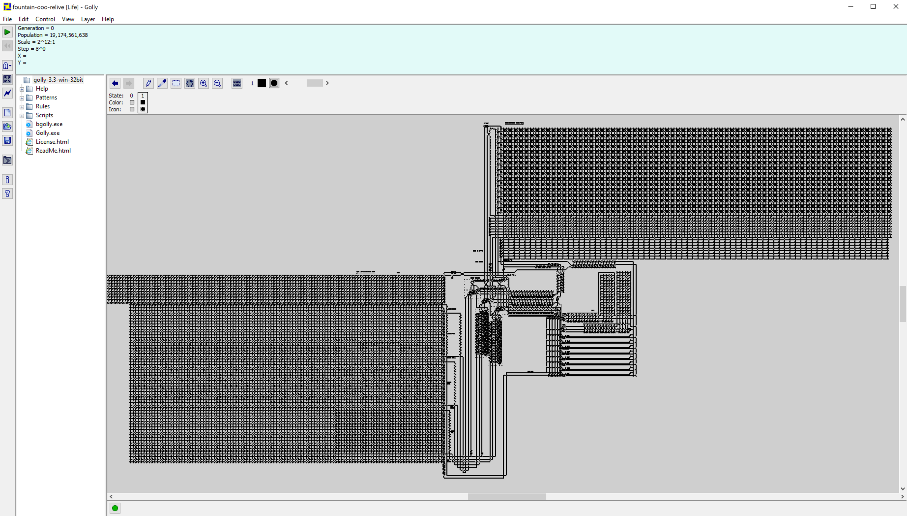
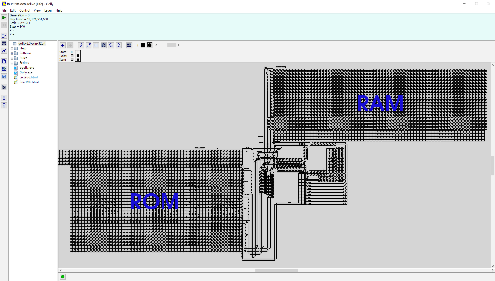
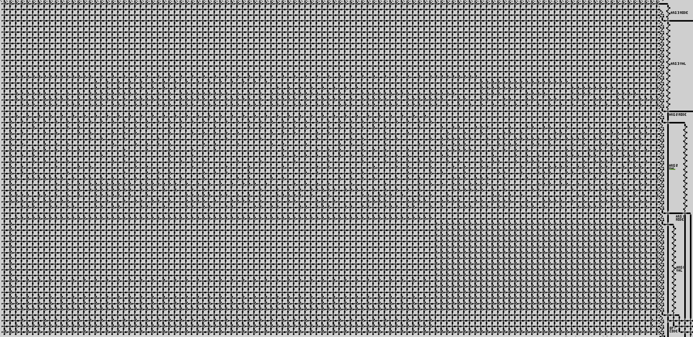
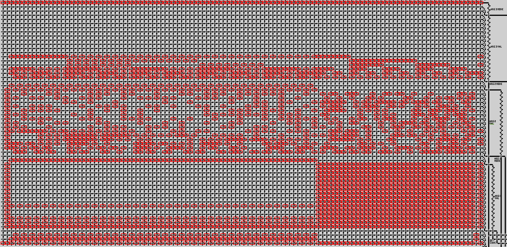

Game of Life¶
Introduction¶
Solved by: avl
Event: DEFCON CTF Quals 2020: https://ctftime.org/event/994
Challenge name: Fountain OOO REliving (115 pts)
Description: We have found the fountain OOO RElive. By discovering its secrets, you will restart the game of life with a chance to do it all over again. This challenge is in memory of John Conway (26 December 1937 – 11 April 2020).
File: fountain-ooo-relive
First analysis¶
We quickly realise fountain-ooo-relive is a MacroCell file representing a pattern that can be imported into the Golly software. Which corroborates the fact this challenge is a tribute to John Conway, a British mathematician famous for its cellular automation called “Game of Life”.
Wikipedia is your friend: https://en.wikipedia.org/wiki/Conway%27s_Game_of_Life
Link to software: http://golly.sourceforge.net/
with open('fountain-ooo-relive', 'r') as f:
data = f.read()
data.splitlines()[:2]
['[M2]', '# GOOOlly its the Fountain OOO REliving']
After importing the file as a pattern into Golly, we obtain this:

… which very much looks like a computer architecture!
It turns out to be a minimalistic RISC architecture designed by a bunch of people who were challenged to make Tetris run on top of Golly. Here is a link to this epic thread: https://codegolf.stackexchange.com/questions/11880/build-a-working-game-of-tetris-in-conways-game-of-life
They basically built:
a basic RISC architecture
an assembly language
an interpreter
a higher-level language called Cogol
Find the flag¶
Having read the above thread, it becomes obvious that the flag will be derived from instructions the organisers concealed into the memory of that custom computer.
But where are the instructions stored in memory? In the ROM! The instructions fetched from the ROM then update values of memory locations located in the RAM, after execution.
The goal here is therefore to find instructions from the ROM.
The below figure shows where the ROM and the RAM are.

If we zoom in on the ROM, we get…

…a grid of automates that represents bits in memory. So we’ve got two different automates corresponding to 0s and 1s.
For example, if we zoom in even more, the automate representing “1” is
Let the fun begin¶
My approach here was:
Use computer vision to detect patterns corresponding to 1s
Create a corresponding matrix with the fetched 0s and 1s
Parse the binary code to get assembly code
Find the flag from the assembly
Detect bits with OpenCV¶
The below code detects 1s and upload them in the coords array.
import cv2
import numpy as np
from matplotlib import pyplot as plt
img_rgb = cv2.imread('../_images/ROM.png') # Screenshot of the ROM
img_gray = cv2.cvtColor(img_rgb, cv2.COLOR_BGR2GRAY)
template = cv2.imread('../_images/1.png',0) # Screenshot of a pattern coresponding to "1"
w, h = template.shape[::-1]
res = cv2.matchTemplate(img_gray,template,cv2.TM_CCOEFF_NORMED)
threshold = 0.8
loc = np.where( res >= threshold)
coords = []
for pt in zip(*loc[::-1]):
cv2.rectangle(img_rgb, pt, (pt[0] + w, pt[1] + h), (0,0,255), 2)
coords.append(pt)
cv2.imwrite('../_images/res.png',img_rgb)
And it gives:

Coordinates to matrix¶
We then convert the results stored in the coords array to a matrix.
n_cols = 116
n_lines = 59 # with the first one
delta = 22
start_y = 6
start_x = 4
mat = np.zeros((59,116),int)
new_coords = []
for c in coords:
x,y = c
x = int((x - start_x)/delta)
y = int((y - start_y)/delta)
new_coords.append((x,y))
mat[y][x] = 1
plt.figure(figsize=(20,10))
plt.imshow(mat)
<matplotlib.image.AxesImage at 0x13112bf90>
Matrix to binary code instructions¶
Following the Stack Overflow thread, we can turn the matrix into instruction lines, which we store in the code variable.
code = ""
for j in range(n_cols):
for i in range(n_lines - 1):
if mat[i+1][j] == 1:
code += '1'
else:
code += '0'
code += '\n'
code.splitlines()[:10]
['0000000000000000000000000000000000000000000000000000000001',
'0000000000000000000011111111111111100011111111111111110001',
'0000000000001001100100000000001001100100000000001001110011',
'0000000000001001110010101010110001110100000000000000010110',
'0000000000001001010100000000001001010100000000001001110011',
'0000000000001001110011000111011000110100000000000000010110',
'0000000000001001000100000000001001000100000000001001110011',
'0000000000001001110010101101001001100100000000000000010110',
'0000000000001000110100000000001000110100000000001001110011',
'0000000000001001110010101101101111010100000000000000010110']
Binary code to assembly instructions¶
“Assembly to binary code” has been implemented in the Python script: https://github.com/QuestForTetris/QFT/blob/master/CreateROM.py
We reversed that script to get a “binary code to assembly” function.
Assembly instructions are now stored in the asm variable.
from bitstring import BitArray
opcodes = {'0000': 'MNZ',
'0001': 'MLZ',
'0010': 'ADD',
'0011': 'SUB',
'0100': 'AND',
'0101': 'OR',
'0110': 'XOR',
'0111': 'ANT',
'1000': 'SL',
'1001': 'SRL',
'1010': 'SRA'}
modes = {'00': '',
'01': 'A',
'10': 'B',
'11': 'C'}
def parse(code):
out = ""
count = 0
for l in code.splitlines()[::-1]:
opcode = opcodes[l[-4:]]
arg1 = l[18*2:-4]
arg2 = l[18:18*2]
arg3 = l[:18]
mode1 = modes[arg1[:2]]
arg1 = str(BitArray(bin=arg1[2:]).int)
mode2 = modes[arg2[:2]]
arg2 = str(BitArray(bin=arg2[2:]).int)
mode3 = modes[arg3[:2]]
arg3 = str(BitArray(bin=arg3[2:]).int)
out += str(count) + '. ' + opcode + ' ' + mode1 + arg1 + ' ' + mode2 + arg2 + ' ' + mode3 + arg3 +'\n'
count+=1
return out
asm = parse(code)
print(asm)
0. MLZ -1 44 43
1. XOR 0 0 2
2. MLZ -1 25971 2
3. MLZ -1 14554 3
4. MLZ -1 22445 4
5. MLZ -1 25411 5
6. MLZ -1 3743 6
7. MLZ -1 13391 7
8. MLZ -1 12059 8
9. MLZ -1 2554 9
10. MLZ -1 15823 10
11. MLZ -1 5921 11
12. MLZ -1 18009 12
13. MLZ -1 14823 13
14. MLZ -1 4757 14
15. MLZ -1 7754 15
16. MLZ -1 22480 16
17. MLZ -1 8371 17
18. MLZ -1 12418 18
19. MLZ -1 22738 19
20. MLZ -1 16499 20
21. MLZ -1 7132 21
22. MLZ -1 22793 22
23. MLZ -1 22307 23
24. MLZ -1 12485 24
25. MLZ -1 7936 25
26. MLZ -1 26630 26
27. MLZ -1 15483 27
28. MLZ -1 6471 28
29. MLZ -1 1806 29
30. MLZ -1 22705 30
31. MLZ -1 25019 31
32. MLZ -1 16442 32
33. MLZ -1 5145 33
34. MLZ -1 15593 34
35. MLZ -1 23867 35
36. MLZ -1 23738 36
37. MLZ -1 14086 37
38. MLZ -1 23123 38
39. MLZ -1 0 39
40. XOR A1 -27179 39
41. SUB A39 A2 2
42. XOR A1 -14018 39
43. SUB A39 A3 3
44. XOR A1 -22549 39
45. SUB A39 A4 4
46. XOR A1 -27735 39
47. SUB A39 A5 5
48. XOR A1 -225 39
49. SUB A39 A6 6
50. XOR A1 -15190 39
51. SUB A39 A7 7
52. XOR A1 -8339 39
53. SUB A39 A8 8
54. XOR A1 -1415 39
55. SUB A39 A9 9
56. XOR A1 -12768 39
57. SUB A39 A10 10
58. XOR A1 -6243 39
59. SUB A39 A11 11
60. XOR A1 -18725 39
61. SUB A39 A12 12
62. XOR A1 -13743 39
63. SUB A39 A13 13
64. XOR A1 -7402 39
65. SUB A39 A14 14
66. XOR A1 -4444 39
67. SUB A39 A15 15
68. XOR A1 -22495 39
69. SUB A39 A16 16
70. XOR A1 -12017 39
71. SUB A39 A17 17
72. XOR A1 -16138 39
73. SUB A39 A18 18
74. XOR A1 -22234 39
75. SUB A39 A19 19
76. XOR A1 -20283 39
77. SUB A39 A20 20
78. XOR A1 -5054 39
79. SUB A39 A21 21
80. XOR A1 -22161 39
81. SUB A39 A22 22
82. XOR A1 -22641 39
83. SUB A39 A23 23
84. XOR A1 -16096 39
85. SUB A39 A24 24
86. XOR A1 -4238 39
87. SUB A39 A25 25
88. XOR A1 -26510 39
89. SUB A39 A26 26
90. XOR A1 -13059 39
91. SUB A39 A27 27
92. XOR A1 -5726 39
93. SUB A39 A28 28
94. XOR A1 -2182 39
95. SUB A39 A29 29
96. XOR A1 -22211 39
97. SUB A39 A30 30
98. XOR A1 -28099 39
99. SUB A39 A31 31
100. XOR A1 -20296 39
101. SUB A39 A32 32
102. XOR A1 -7012 39
103. SUB A39 A33 33
104. XOR A1 -12961 39
105. SUB A39 A34 34
106. XOR A1 -21059 39
107. SUB A39 A35 35
108. XOR A1 -21210 39
109. SUB A39 A36 36
110. XOR A1 -14493 39
111. SUB A39 A37 37
112. XOR A1 -21817 39
113. SUB A39 A38 38
114. MLZ -1 -2 0
115. MLZ 0 0 0
Interpreter¶
An interpreter exists: http://play.starmaninnovations.com/qftasm/
But the code is easy enough to be analysed quickly:
The
MLZ -1 [n] [addr]instructions set theaddrvalue to the numbern.Addresses 2 to 38 contain values that then get updated using
XORandSUBmethods.Two other variables located respectively in addresses 1 and 39 are being used to perform the updates.
Value at address 39 is known but not at address 1.
def interpreter(asm, addr1):
init = []
xored = []
for l in asm.splitlines()[2:39]:
init.append(int(l.split()[3]))
for l in asm.splitlines()[40:-2:2]:
xored.append(int(l.split()[3]))
return [(addr1^v)-u+32768 for u,v in zip(init,xored)]
Solving the challenge¶
We know that the flag starts with
OOO.As address 1 is unknown, the last step here is to try out different possibilities for that address (bruteforce) until we find the ASCII decimal code to the
Ocharacter in the 3 first addresses containing the flag (2, 3 and 4).
def solve(asm):
for i in range(37000):
l = interpreter(asm, i)
if l[:3] == [79,79,79]:
return "".join([chr(u) for u in l])
return 'Not found'
solve(asm)
'OOO{in_this_life___youre_on_your_own}'